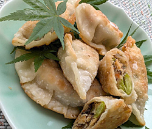

おからの揚げ焼き餃子
- 調理時間： 45分
- （一人当たり）
- カロリー：570kcal
- たんぱく質：15.5g
- 脂質：40.8g
- 炭水化物：33.0g
- 塩分：1.1g


＜2人分＞
- おから（生）
- 100g
- ・ニンジン(イチョウ切り)
- 50g
- ・干ししいたけ(粗めのみじん切り)
- 1～2枚
- ・そら豆(茹でて皮をむく)
- 50g
- ・コンニャク(さいの目切り)
- 50g
- ・鶏肉(小さめの一口サイズ)
- 50g
- ・生きくらげ(粗めのみじん切り)
- 1枚
- ・油揚げ（細切り）
- 1/2枚
A
- 長ネギ（小口切り）
- 1/3本
- 生姜汁
- 1片
- ・だし汁
- 150～200ml
- ・薄口醤油
- 小さじ2
- ・みりん
- 小さじ2
- ゴマ油
- 少々
- 餃子の皮
- 適量
- 植物油（揚げ焼き用）
- 適量
B


- ☆餃子のタネ（おからの煮物）をつくる
食材は、それぞれ切って、下準備する。 - 鍋にAの食材とBを入れる。
（鍋はひたひたの水分が望ましいので、足らなければ水を足す）
火にかけてサッと煮る。
煮えたら、ザルにあげてだし汁と食材に分ける。 - フライパンにゴマ油を熱し、おからを加えて中火で炒める。
だし汁で煮た②の野菜類を加えてさらに炒める。 - 全体に油が回ったら、②のだし汁を少しずつ加えて、水分がなくなるまで炒め煮る。
- 仕上げに小口切りのネギと生姜汁を加え、全体を混ぜ合わせる。
- ☆餃子に仕上げる
皮に餃子のタネをのせ、まわりに水溶き小麦粉（分量外）を塗り、ヒダをつけながら包む。 - フライパンに多めの油をひき、餃子を敷き詰めて、揚げ焼きにする。
おからの揚げ焼き餃子
高齢期のフレイル予防に「おから料理」がおすすめです。
おからには、筋肉量を維持するために欠かせないたんぱく質が豊富に含まれます。さらに、筋肉を支える骨に必要なカルシウムを補うことができます。おからの煮物を具沢山にすれば、栄養満点です。
昔ながらのおからの煮物も洋風や中華風にアレンジしたり、昨日の残りをリメイクしたり、お試しください。